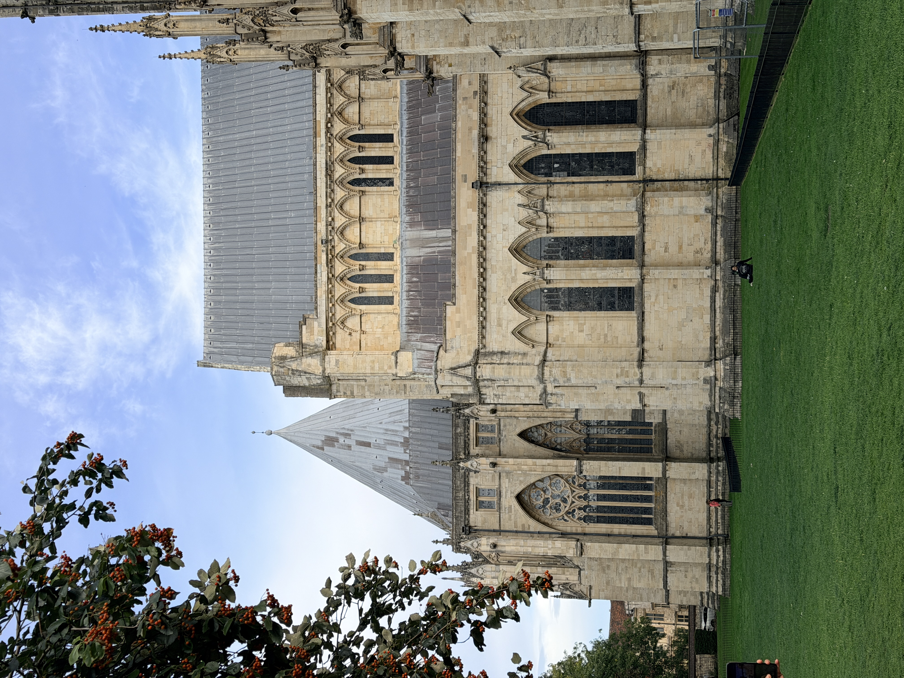
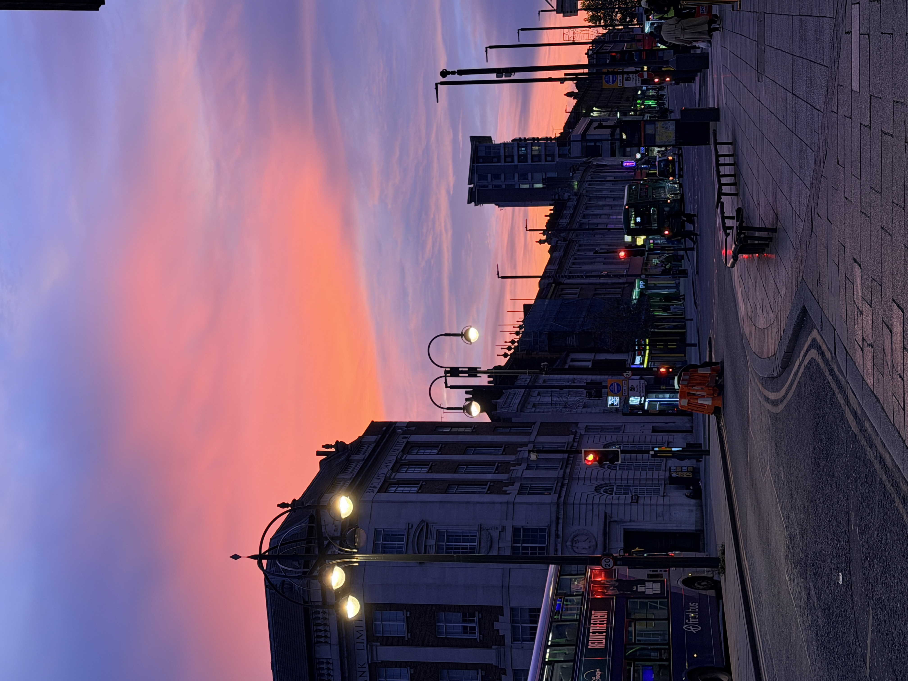
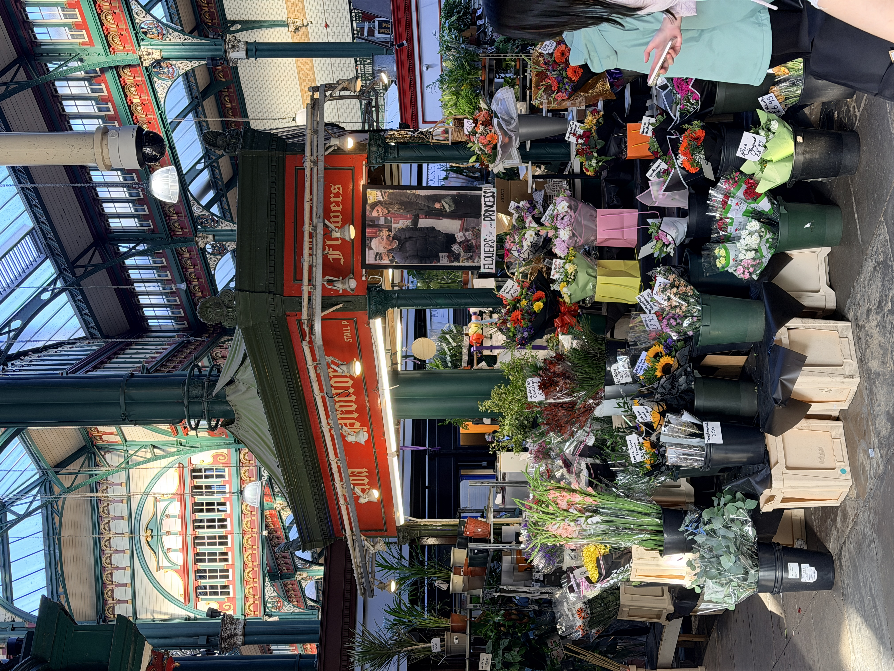
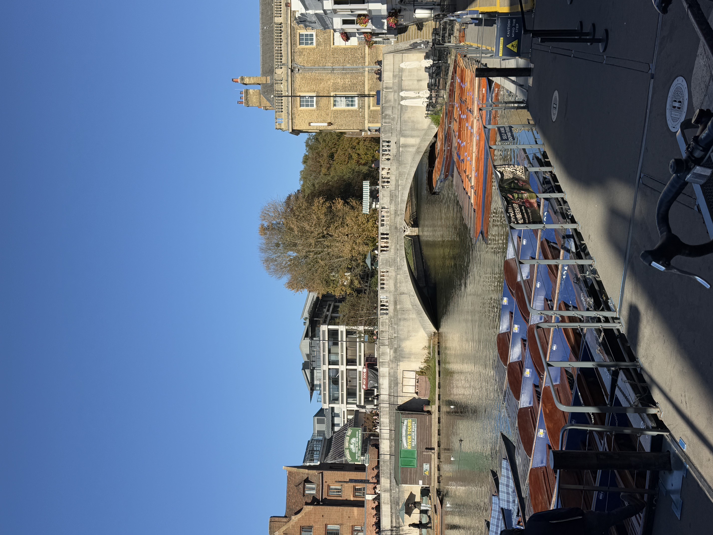
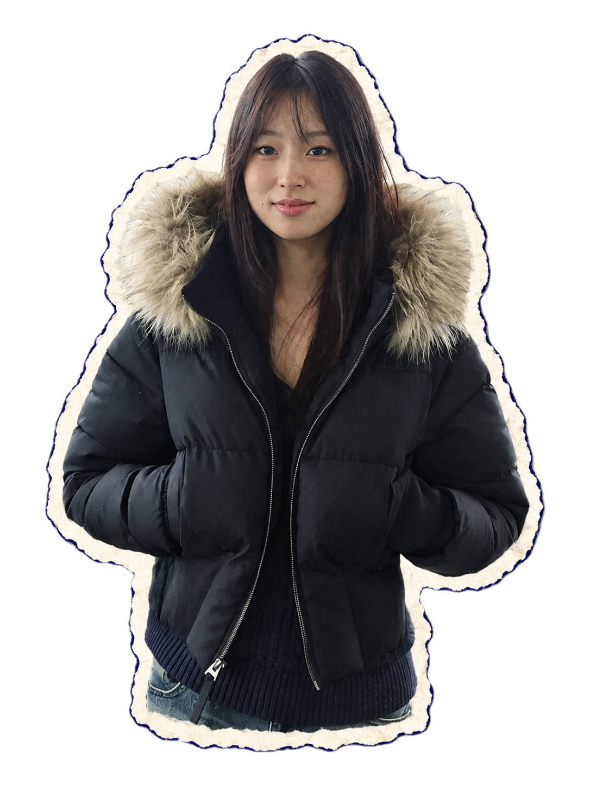
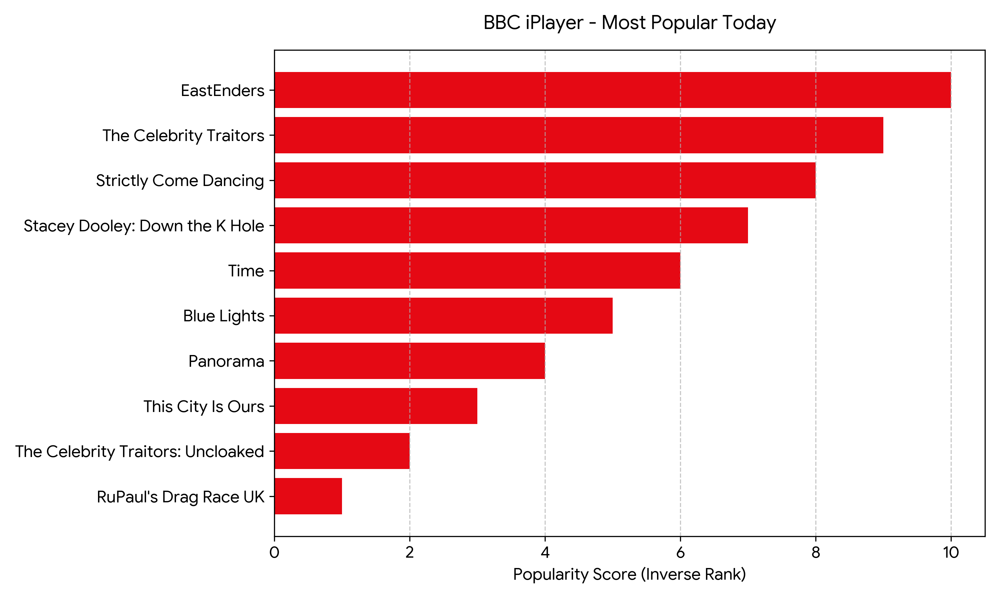
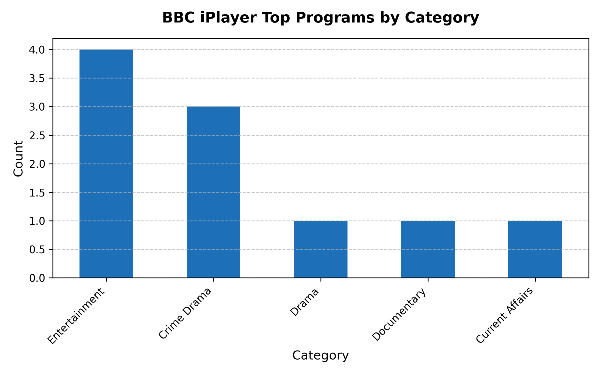

Advertising
& Campaigns
Creative concepts, brand ideas and audience insights.





NICE TO MEET YOU!
A curious mind, always exploring ♡
Hi again! I'm Vesper, an advertising graduate exploring the world of digital media and communication.
I'm fascinated by how creative ideas, digital platforms and people connect. I love discovering new perspectives and turning little sparks of inspiration into something meaningful.
Always curious. Always collecting ideas.
MADE OFCreative concepts, brand ideas and audience insights.
Exploring platforms, online communities and digital society.
Creative ideas, design experiments and visual storytelling.
A growing collection of projects, ideas and inspiration.
THINK · MAKE · REFLECT
A record of what I learn in each workshop and the work I make afterwards.
DIGITAL PRACTICE JOURNAL
01 / A NEW PERSPECTIVE
In our second-week seminar, I started to see the web differently. I’m used to sharing things on social media, where the platform takes care of the layout, storage and distribution. This time, I wrote a basic HTML page and styled it with CSS in a code editor. Checking my work with the W3C Validator helped me understand that the web is built on structured code and shared standards. Publishing my files through GitHub Pages or Leeds CampusPress made the infrastructure behind a live website feel much more tangible.
02 / TOOLS & CHALLENGES
Building my site and setting up a remote repository took some trial and error. Git and GitHub were new to me, so branches, commits and file paths took time to understand. I also spent a while adjusting the CSS and responsive layout so the page would work well on different screens. Each small fix helped me feel more confident about how a website is put together and published.
DIGITAL PRACTICE JOURNAL
01 / A NEW PERSPECTIVE
Before this workshop, I thought of websites mainly as places to browse and read. Working with the Web Scraper extension and Python scripts in Google Colab changed that. I realised that webpages are built from structured HTML and can also be treated as sources of data. I began to look at websites through a data analyst’s lens, paying attention to the information behind the page and how it could be collected.
02 / TOOLS & CHALLENGES
Web Scraper was an easy way for me to collect data and export it as a CSV, even without much coding experience. Running Python in a Jupyter Notebook gave me more control, especially for larger or repetitive tasks. I also learned how easily a scraper can fail when a site changes its layout, blocks automated traffic or displays a cookie pop-up. In those cases, browser automation tools such as Selenium or Playwright can help by interacting with the page through a browser.
AFTER THE WORKSHOP / ASSIGNMENT
These images show a sample of my scraped programme data and the charts I made from it.



04 / LET'S CONNECT
Have an idea? I'd love to hear about it.
Say hello ↗